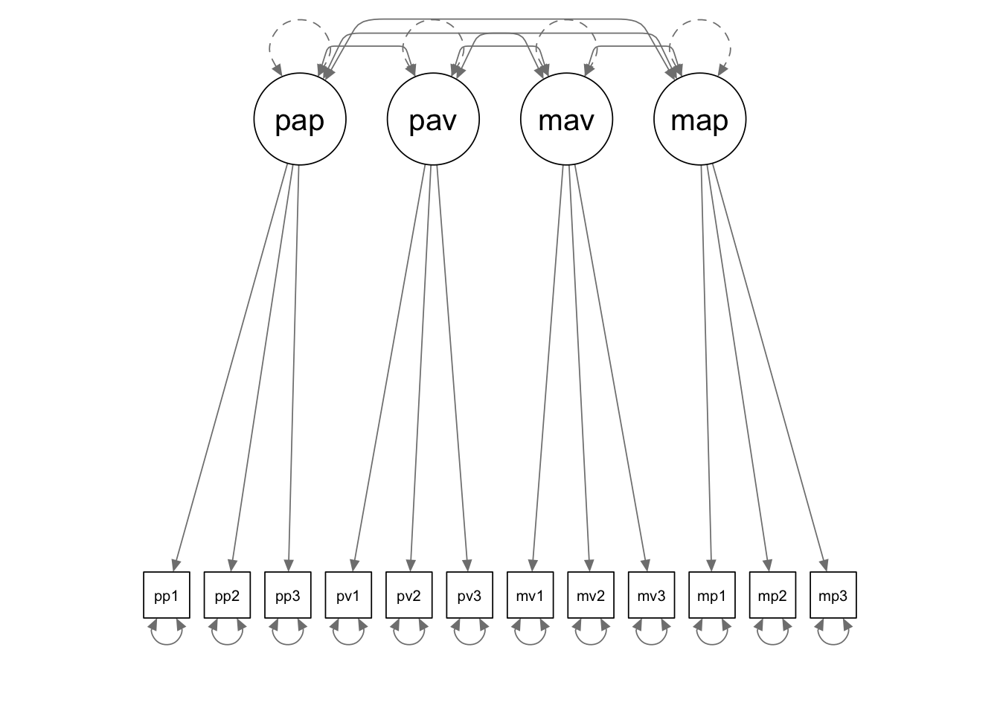

In this tutorial, we are going to use lavaan to deal with nonnormal data. The example corresponds to the Achievement Goal Questionnaire example in your course slides.
library(lavaan)
library(semPlot)The data for this example is saved in a txt file named “nonnormal_data.txt”, which is provided as part of the course materials. You can use the read.delim() function to read in a txt file. There are many different ways for you to supply the file path in the read.delim() function call. Below I first set the working directory to the folder where my data is saved, and then I simply supply the name of the data file when calling the read.delim() function.
setwd(mypath) # change it to the path of your own data folder
nonnormal <- read.delim("nonnormal_data.txt", sep = "\t", header = F)
colnames(nonnormal) <- c('pap1','pap2','pap3','pav1','pav2','pav3',
'mav1','mav2','mav3','map1','map2','map3')You can take a look at the data and get the sample statistics.
# descriptive statistics
str(nonnormal)## 'data.frame': 300 obs. of 12 variables:
## $ pap1: num 18 18 16 7 20 18 16 20 18 0 ...
## $ pap2: num 18 18 16 7 20 18 20 18 16 0 ...
## $ pap3: num 18 7 11 7 20 18 18 18 18 0 ...
## $ pav1: num 20 18 7 7 20 18 16 11 18 0 ...
## $ pav2: num 11 18 7 7 0 18 14 14 18 0 ...
## $ pav3: num 18 18 7 14 0 16 18 16 7 16 ...
## $ mav1: num 18 14 11 16 0 18 14 16 7 0 ...
## $ mav2: num 18 11 14 16 0 20 18 20 16 18 ...
## $ mav3: num 18 11 7 16 0 18 16 16 0 0 ...
## $ map1: num 20 20 20 16 20 18 18 18 20 18 ...
## $ map2: num 18 18 20 18 20 20 18 14 18 16 ...
## $ map3: num 20 18 20 18 20 18 20 18 18 20 ...summary(nonnormal)## pap1 pap2 pap3 pav1 pav2
## Min. : 0.00 Min. : 0.00 Min. : 0.00 Min. : 0.00 Min. : 0.00
## 1st Qu.:14.00 1st Qu.:14.00 1st Qu.:14.00 1st Qu.:14.00 1st Qu.:11.00
## Median :16.00 Median :16.00 Median :16.00 Median :16.00 Median :14.00
## Mean :16.28 Mean :15.85 Mean :15.18 Mean :14.75 Mean :12.97
## 3rd Qu.:18.00 3rd Qu.:18.00 3rd Qu.:18.00 3rd Qu.:18.00 3rd Qu.:16.50
## Max. :20.00 Max. :20.00 Max. :20.00 Max. :20.00 Max. :20.00
## pav3 mav1 mav2 mav3 map1
## Min. : 0.00 Min. : 0.0 Min. : 0.00 Min. : 0.00 Min. : 0.00
## 1st Qu.:11.00 1st Qu.:11.0 1st Qu.:14.00 1st Qu.: 7.00 1st Qu.:18.00
## Median :16.00 Median :14.0 Median :16.00 Median :14.00 Median :20.00
## Mean :14.46 Mean :12.9 Mean :15.74 Mean :12.01 Mean :18.46
## 3rd Qu.:18.00 3rd Qu.:16.0 3rd Qu.:18.00 3rd Qu.:16.00 3rd Qu.:20.00
## Max. :20.00 Max. :20.0 Max. :20.00 Max. :20.00 Max. :20.00
## map2 map3
## Min. : 0.00 Min. : 0.0
## 1st Qu.:16.00 1st Qu.:16.0
## Median :18.00 Median :18.0
## Mean :17.85 Mean :17.3
## 3rd Qu.:20.00 3rd Qu.:20.0
## Max. :20.00 Max. :20.0# cor(nonnormal, use = "pairwise.complete.obs")
To request maximum likelihood estimation with robust standard errors and a Satorra-Bentler scaled test statistic, you need to specify estimator = "MLM" in the fitting function.
To make the model syntax more concise, I ommited the mean structure formulas in code. Instead, I added the meanstructure = T argument to tell lavaan to include the mean structure in model estimation.
nonnormal.model <- '
pap =~ NA*pap1 + pap2 + pap3
pav =~ NA*pav1 + pav2 + pav3
mav =~ NA*mav1 + mav2 + mav3
map =~ NA*map1 + map2 + map3
pap ~~ 1*pap
pav ~~ 1*pav
mav ~~ 1*mav
map ~~ 1*map
'
nonnormal.fit <- sem(nonnormal.model, data = nonnormal, estimator = "MLM", meanstructure = T)
summary(nonnormal.fit, fit.measures = T, standardized = T)## lavaan 0.6-9 ended normally after 26 iterations
##
## Estimator ML
## Optimization method NLMINB
## Number of model parameters 42
##
## Number of observations 300
##
## Model Test User Model:
## Standard Robust
## Test Statistic 110.687 71.183
## Degrees of freedom 48 48
## P-value (Chi-square) 0.000 0.017
## Scaling correction factor 1.555
## Satorra-Bentler correction
##
## Model Test Baseline Model:
##
## Test statistic 1285.802 529.496
## Degrees of freedom 66 66
## P-value 0.000 0.000
## Scaling correction factor 2.428
##
## User Model versus Baseline Model:
##
## Comparative Fit Index (CFI) 0.949 0.950
## Tucker-Lewis Index (TLI) 0.929 0.931
##
## Robust Comparative Fit Index (CFI) 0.968
## Robust Tucker-Lewis Index (TLI) 0.956
##
## Loglikelihood and Information Criteria:
##
## Loglikelihood user model (H0) -9501.660 -9501.660
## Loglikelihood unrestricted model (H1) -9446.316 -9446.316
##
## Akaike (AIC) 19087.319 19087.319
## Bayesian (BIC) 19242.878 19242.878
## Sample-size adjusted Bayesian (BIC) 19109.679 19109.679
##
## Root Mean Square Error of Approximation:
##
## RMSEA 0.066 0.040
## 90 Percent confidence interval - lower 0.050 0.023
## 90 Percent confidence interval - upper 0.082 0.055
## P-value RMSEA <= 0.05 0.051 0.850
##
## Robust RMSEA 0.050
## 90 Percent confidence interval - lower 0.022
## 90 Percent confidence interval - upper 0.073
##
## Standardized Root Mean Square Residual:
##
## SRMR 0.054 0.054
##
## Parameter Estimates:
##
## Standard errors Robust.sem
## Information Expected
## Information saturated (h1) model Structured
##
## Latent Variables:
## Estimate Std.Err z-value P(>|z|) Std.lv Std.all
## pap =~
## pap1 3.230 0.353 9.164 0.000 3.230 0.866
## pap2 2.966 0.382 7.775 0.000 2.966 0.730
## pap3 3.332 0.380 8.765 0.000 3.332 0.767
## pav =~
## pav1 3.707 0.418 8.866 0.000 3.707 0.655
## pav2 4.557 0.331 13.765 0.000 4.557 0.839
## pav3 3.272 0.395 8.290 0.000 3.272 0.623
## mav =~
## mav1 4.191 0.336 12.464 0.000 4.191 0.848
## mav2 1.944 0.308 6.318 0.000 1.944 0.513
## mav3 4.750 0.309 15.387 0.000 4.750 0.826
## map =~
## map1 1.730 0.354 4.881 0.000 1.730 0.821
## map2 1.578 0.371 4.255 0.000 1.578 0.616
## map3 1.794 0.294 6.105 0.000 1.794 0.682
##
## Covariances:
## Estimate Std.Err z-value P(>|z|) Std.lv Std.all
## pap ~~
## pav 0.488 0.083 5.855 0.000 0.488 0.488
## mav 0.180 0.089 2.018 0.044 0.180 0.180
## map 0.212 0.109 1.943 0.052 0.212 0.212
## pav ~~
## mav 0.537 0.069 7.827 0.000 0.537 0.537
## map 0.024 0.070 0.342 0.732 0.024 0.024
## mav ~~
## map 0.101 0.093 1.087 0.277 0.101 0.101
##
## Intercepts:
## Estimate Std.Err z-value P(>|z|) Std.lv Std.all
## .pap1 16.277 0.215 75.562 0.000 16.277 4.363
## .pap2 15.847 0.235 67.564 0.000 15.847 3.901
## .pap3 15.183 0.251 60.562 0.000 15.183 3.497
## .pav1 14.753 0.327 45.150 0.000 14.753 2.607
## .pav2 12.973 0.313 41.386 0.000 12.973 2.389
## .pav3 14.460 0.303 47.712 0.000 14.460 2.755
## .mav1 12.897 0.285 45.210 0.000 12.897 2.610
## .mav2 15.740 0.219 71.912 0.000 15.740 4.152
## .mav3 12.007 0.332 36.161 0.000 12.007 2.088
## .map1 18.460 0.122 151.825 0.000 18.460 8.766
## .map2 17.853 0.148 120.625 0.000 17.853 6.964
## .map3 17.303 0.152 113.892 0.000 17.303 6.576
## pap 0.000 0.000 0.000
## pav 0.000 0.000 0.000
## mav 0.000 0.000 0.000
## map 0.000 0.000 0.000
##
## Variances:
## Estimate Std.Err z-value P(>|z|) Std.lv Std.all
## pap 1.000 1.000 1.000
## pav 1.000 1.000 1.000
## mav 1.000 1.000 1.000
## map 1.000 1.000 1.000
## .pap1 3.485 0.738 4.720 0.000 3.485 0.250
## .pap2 7.705 1.648 4.676 0.000 7.705 0.467
## .pap3 7.752 1.963 3.948 0.000 7.752 0.411
## .pav1 18.294 2.781 6.578 0.000 18.294 0.571
## .pav2 8.709 2.430 3.585 0.000 8.709 0.295
## .pav3 16.848 2.254 7.476 0.000 16.848 0.611
## .mav1 6.849 1.721 3.981 0.000 6.849 0.281
## .mav2 10.592 1.246 8.499 0.000 10.592 0.737
## .mav3 10.514 2.171 4.844 0.000 10.514 0.318
## .map1 1.442 0.353 4.090 0.000 1.442 0.325
## .map2 4.081 0.791 5.157 0.000 4.081 0.621
## .map3 3.707 1.214 3.053 0.002 3.707 0.535